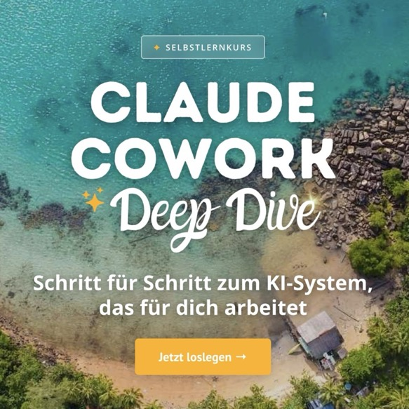

Claude Cowork Deep Dive – Selbstlernkurs
Schritt für Schritt zu einem KI-System, das im Hintergrund mitarbeitet. Acht Themenfelder, Praxislektionen und ein wachsender Werkzeugkasten – einmalig 195 € netto, 24 Monate Zugang.
Zum Selbstlernkurs